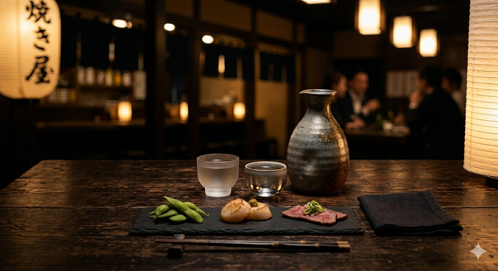

日々の終わりに、日本酒を味わう贅沢な時間
我が家にとって日本酒は、夫婦共通のいちばんの趣味です。週末はもちろん、日々の仕事や家事が一段落したあとに、新しく手に入れた一本を夫婦で開けて「これはすっきりしていて美味しいね」「この料理にすごく合う！」などと語り合う時間を何より大切にしています。
ただ飲むだけでなく、そのお酒が作られた地域の気候、蔵人さんのこだわり、その日の器や料理との相性をあれこれ探求するのが、とても楽しくて心地よい時間になっています。
一期一会の記録

銘柄名をここに記載
★★★★★ここにその日の料理との相性や、飲んだ感想などのディテールを都度書き足していきます。
2026.06.19